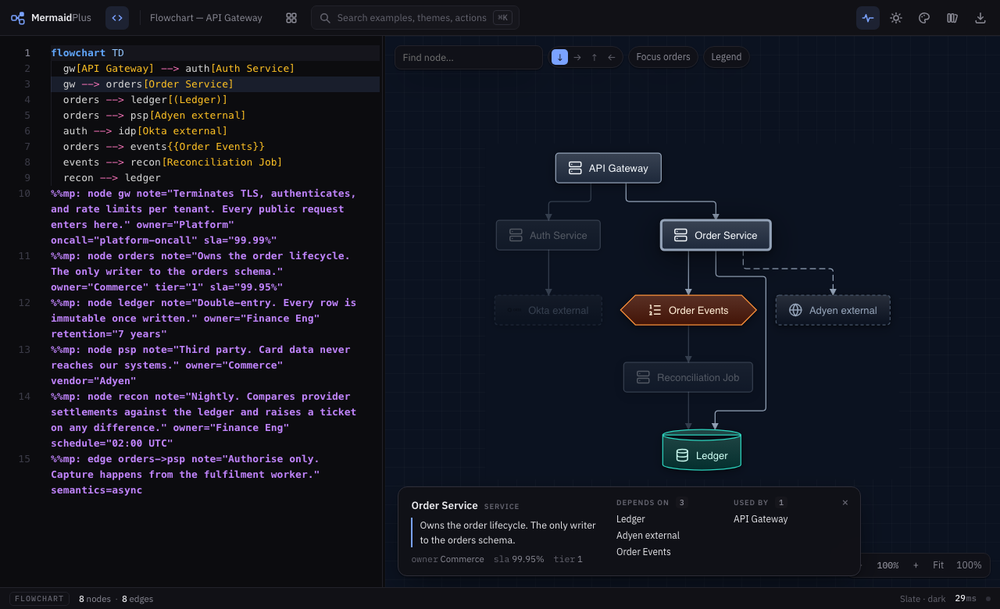

Chapter 4
Explaining a diagram
A diagram that needs you standing next to it is half a document. This is how the other half goes into the same file — so it is still there in six months, when you are not.
Click anything
Selecting a component lights up everything it touches and explains it along the bottom: what it depends on, what depends on it, and whatever the author wrote about it. The links are clickable, so you can walk the graph without reading the source.

Write the explanation into the source
Any attribute you invent becomes metadata on the panel. A few conventional ones:
%%mp: node orders note="Owns the order lifecycle. The only writer to the orders schema." owner="Commerce" tier="1" sla="99.95%" %%mp: edge orders->psp note="Authorise only. Capture happens from the fulfilment worker." semantics=async
Notes work on node, edge and group.
Because they are Mermaid comments, the file still renders in GitHub and
anywhere else — the notes are simply invisible there.
Write the note for the reader who was not in the meeting. "Authorise only, capture happens at dispatch" earns its place. "Payment service" does not — the label already says that.
Edges can mean different things
Mermaid's line styles already carry meaning, and the renderer keeps it: a broken line is indirect, a thick line carries volume. You can also say it outright:
| Semantics | Reads as |
|---|---|
flow | A flows to B |
async | A sends to B, without waiting |
dependency | A depends on B |
association | A is associated with B |
inheritance | A inherits from B |
composition | A is composed of B |
bidirectional | Both ways |
By keyboard
Click the canvas once, then use the arrow keys. They follow connections, not the screen: from a fan-out, → takes the branch that actually points right, and there is no jump to a node that merely sits nearby. The panel narrates each step.
| Key | Does |
|---|---|
| ← → ↑ ↓ | Move to the connected node that way |
| Enter | Expand a collapsed group |
| Esc | Clear the selection |
It is often faster than the mouse for tracing a dependency chain, and it is the only way in for anyone who does not use one.
The editor and the canvas stay in step
Click a node and the editor scrolls to the line that declares it. Move the cursor in the editor and the matching node highlights. A syntax error never blanks the canvas — the last good render stays up while you fix the line.